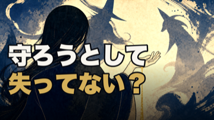
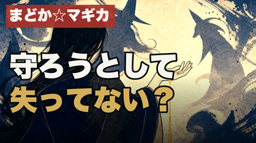

HaQei / アニメと易経 ・ Step9 サムネ本人ゲート
第42話 サムネA/B — まどか☆マギカ × 剥
確定タイトル：まどか☆マギカは、願いが一枚ずつ剥がれ落ちる物語だった【第四十二話・剥】
実寸360pxモック。ベース＝V_06_02（後ろ姿の少女＋手からこぼれる金砂＋魔女の二相＝剥がれ落ちる願いと残る一果を一枚で表す）。コピー「守ろうとして／失ってない？」＝タイトルに無い視聴者痛点を問い型で足す（相補性）。
A案（推奨）: 作品名タグなし

推奨理由：サムネ生成スクリプト自身が2026-07-12に「作品名・卦名はタイトルに既出＝サムネで繰り返さない（complementarity）」でタグを必須から外している。タイトルが「まどか☆マギカ…」で始まる本件は重複回避が定石。コピーが大きく主役画像も見えて明快。
B案: 作品名タグあり

左上に赤タグ「まどか☆マギカ」。Tier A①の作品名タグに忠実だが、タイトル冒頭と重複（ep40では fork採点が相補性で減点した前例）。一覧で作品名を二度見せたい場合はこちら。
ご判断ください（サムネ）：A（タグなし・推奨） ／ B（タグあり） ／ コピー文言を変更（「守ろうとして／失ってない？」以外にしたい場合は指定）。
選ばれた版を releases/062/thumbnail.png に採用します。